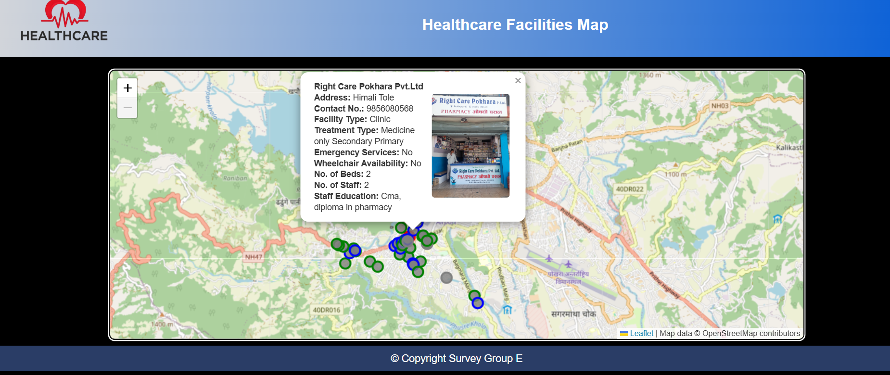

Using Leaflet JS to Create an Interactive Web Map
Our team developed an interactive web map to display health facilities in Pokhara Ward 17. This map provides easy navigation and access to the locations of various health facilities in the area, enhancing the public's awareness and access to medical services.
Course: 6th Semester Field Camp
Affiliation: Paschimanchal Campus, IOE
This project is part of our 18-day survey camp, conducted in Pokhara Ward 17. Our team utilized GPS technology and KoboCollect to gather data on various health facilities. After completing a two-day GPS survey, we decided to build an interactive web map that would showcase these health facilities and their locations in a clear and accessible way. My specific role in this project was to develop the web page using HTML, CSS, and JavaScript (with the Leaflet JS library). I was responsible for creating the structure of the webpage, implementing the interactive map, and providing an easy way to download the prepared maps. The web map enables users to interact with the health facility data, and it's designed to be responsive and user-friendly. This interactive map not only highlights the health facilities in Pokhara Ward 17 but also provides additional functionalities like map navigation, zooming, and download options. The project was a collaborative effort with my teammates, and the result is a practical and informative tool that enhances public access to health facility information.